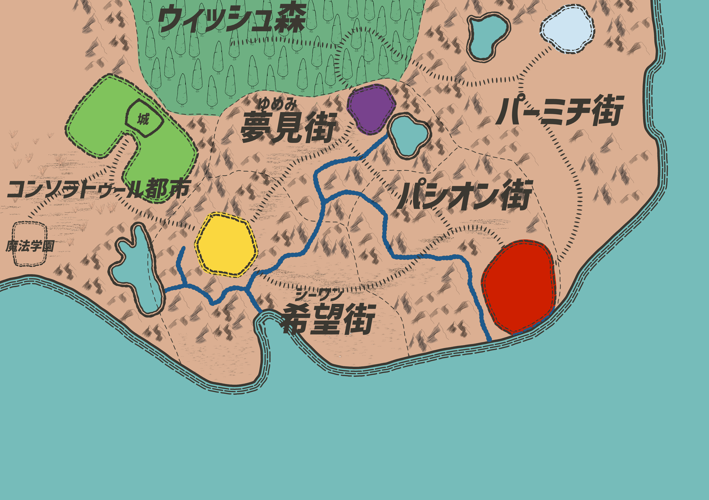
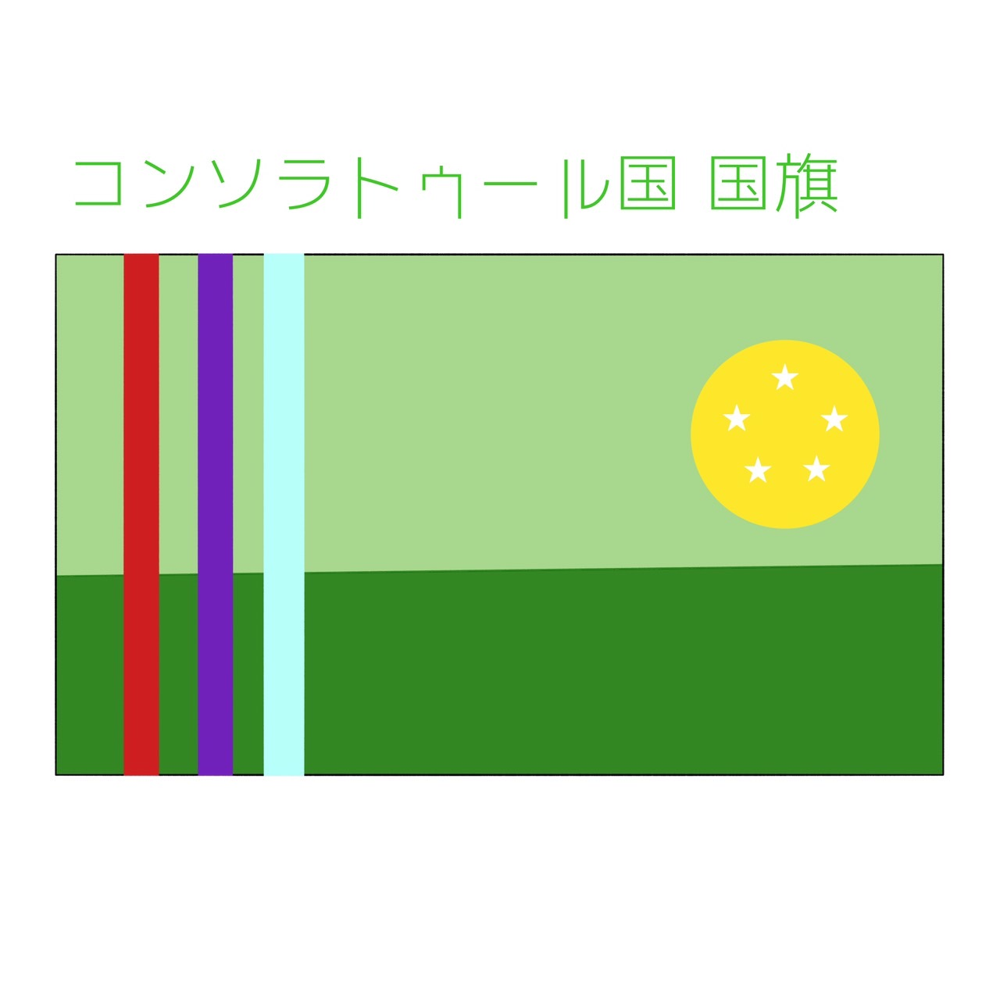

コンソラトゥール国

癒しを与える、穏やかで平和な国。
『癒しの国での日常』の物語の中心となる、メインの国です。
フィルマ島
神紀時代から空に浮かび続けている、不思議な島。
かつては数多くの神々や天使たちが暮らしており、
神聖な存在が集う場所として知られていた。
静安時代を迎えた現在では、天使たちが主な住人となっている。
島の管理は、神紀時代からこの島にいる管理女神・オネ様が担っている。
2000年以上の時を生きるオネ様は、今もこの天空の島を見守り続けている。
アンラン国
コンソラトゥール国の地下に存在する、広大な地下国。
国土は大きく二つのエリアに分かれており、
冥土エリアと、悪魔族が暮らすデビルエリアが存在する。
それぞれ異なる区域として分かれており、
両エリアを行き来できる人物はごく一部に限られている。
現在は管理神であるハルート様が、この国を管理している。
ラブト国
コンソラトゥール国の南に位置する、異国情緒あふれるアラビアンな国。
商人や踊り子が多く暮らしており、
活気ある市場や華やかな文化が特徴的。
さまざまな品物や文化が行き交う、賑やかな国として知られている。
なお、戦記時代には「カーブース国」と呼ばれていた。
パンタシア国
かつて存在した幻の国。177年前、戦争に敗れて没落しました。